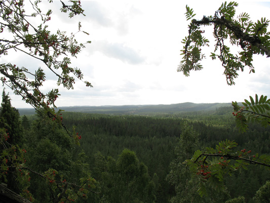
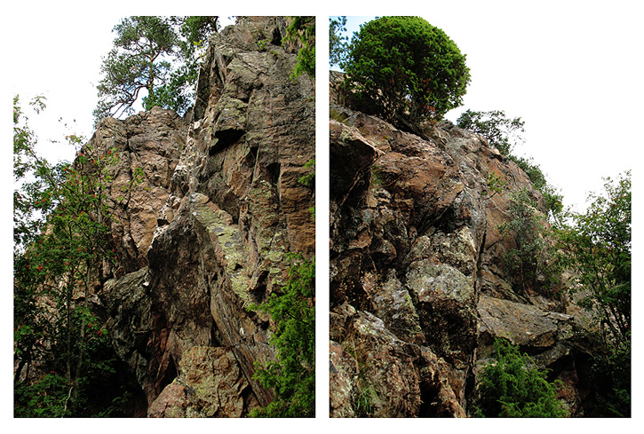
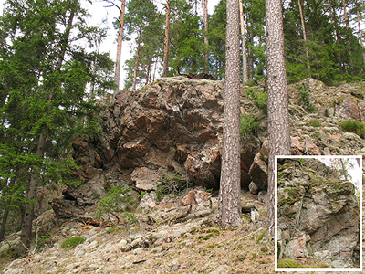

GPS: 57.432116666666666,13.606383333333333
Klippan ligger i Naturreservatet Isaberg och är ännu mer eller mindre oklättrad så det finns gott om möjligheter för nyturer här. I anslutning till klippan finns det också fina platser för bouldering.
I närheten ligger natursköna Isaberg som erbjuder massor av aktiviteter för hela familjen under årets alla årstider.
Kör till Hestra via Rv26 från Halmstad/Jönköping, Rv151 från Värnamo eller Rv27 från Borås (Sväng i Mossebo mot Grimsås/Hestra/Isaberg).
Enklaste vägen till klippan är att köra upp till Isabergs skidområde, fortsätta förbi den stora parkeringsplatsen och vidare upp mot tornet. Ca 250 m från botten av Familjebacken och värmestugan svänger vägen i en skarp vänsterkurva. Parkera på gräsplätten mitt i svängen och gå rakt utåt ca 20 m så är du vid klippan. Till botten av klippan kommer du enklast på vänster sida, sett uppifrån.
Koordinater till gräsplätten i svängen:
N57 25.941
E13 36.457
Alternativ anmarsch nerifrån
ca 400 m efter att ni lämnat Hestra på vägen ut mot Rv26 (Nissastigen) står ett par stora gula skyltar "Vattenskyddsområde". Precis efter dessa svänger ni av in på en liten väg till vänster. Ta direkt åt höger och sedan vänster och kör så långt in som det går. Längst in finns ett "T-kors" och vägen till höger blir strax en stig; här finns även en liten vändplats. Parkera här och följ sedan stigen utmed berget, bort från samhället. Efter knappt 150 m ligger det en ganska stor sten intill stigen på vänster sida. Vik av här och vandra uppåt 100 m igenom tät granskog för att komma till botten av klippan.
Koordinater till vändplatsen vid stigens början
N57 25.991
E13 36.306
Koordinater till stenen vid stigen
N57 25.930
E13 36.310
Den här klippan är ännu så gott som outforskad och bjuder på trad- och topprepsklättring i graderna 3-6 à ca 6-15 m. Gott om grepp, en del överhäng och delvis välsäkrade väggar kan erbjuda något till de flesta. Klippan är lång, omkring 70 m totalt, så se till att utforska den från norr till söder!
I området finns även några fina platser för bouldering.
Dessa är främst:
Huvudklippans norra del (mot samhället till)
Fristående klippblock ca 100-200 m söder om huvudväggen i dess förlängning.
För att ta sig till de sistnämnda är det smidigast att följa den alternativa anmarschbeskrivningen; men istället för att vid stenen vika av in i skogen följer man stigen tills den tar slut vid en vändplats och sedan vidare på en upptrampad skogsstig. Klipporna ligger allesammans ca 100 m upp i skogen som här är öppen och det är enkelt att lokalisera dem.
Kategori:trad
Kategori:Bouldering
kategori:Saknar skiss
kategori:Saknar leder
kategori:Saknar skrivarformatering
Category:Småland
Copyright (C) Permission is granted to copy, distribute and/or modify this document under the terms of the GNU Free Documentation License, Version 1.3